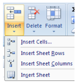
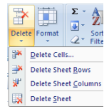

|  |
Inserarea unui rând sau unei coloane în tabel
- Clic pe rândul sau coloana înaintea căreia doriţi să inseraţi rândul sau coloana.
- În fila Pagină de pornire(Home), în grupul Celule(Cells), faceţi clic pe Insert
- Se alege Insert Sheet Rows dacă dorim să adăugăm un rând sau Insert Sheet Columns dacă dorim să adăugăm o coloană.
|
|  |
Ştergerea unui rând sau unei coloane din tabel
- Daţi clic pe rândul sau coloana pe care doriţi a o şterge.
- În fila Pagină de pornire(Home), în grupul Celule(Cells), faceţi clic pe ştergere (Delete).
- Se alege Delete Sheet Rows dacă dorim să ştergem un rând sau Delete Sheet Columns dacă dorim să ştergem o coloană.
|
 |
Sortarea datelor dintr-o coloană
- Selectaţi coloana ce doriţi să o sortaţi
- În fila Pagină de pornire(Home), în grupul Editare(Editing), faceţi clic pe Sortare & Filtrare (Sort&Filter).
- Se alege Sort A to Z dacă se doreşte sortarea crescătoare sau Sort Z to A dacă se doreşte sortarea descrescătoare
|
 |
Formatarea datelor
- Selectaţi celula, zona de celule, textul sau caracterele pe care doriţi să le formataţi.
- În fila Pornire (Home), în grupul Font, puteţi stabili următoarele:
|
|
- tipul fontului (font face) – ex. Arial

- dimensiunea fontului (font size) – ex. 11

- mărirea dimensiunii fontului (increase font size) -

- micşorarea dimensiunii fontului (decrease font size) -

- îngroşarea fontului (bold) -

- înclinarea fontului (italic) -

- sublinierea fontului (underline) -

- bordurarea tabelului (borders) -

- culoarea de fundal (fill color) -

- culoarea fontului (font color) -

|